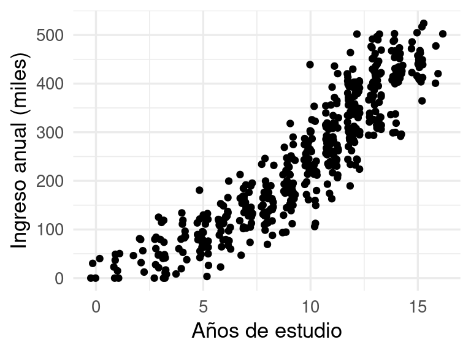
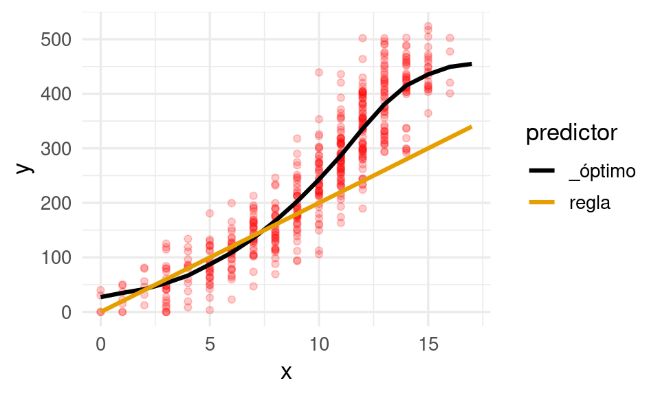
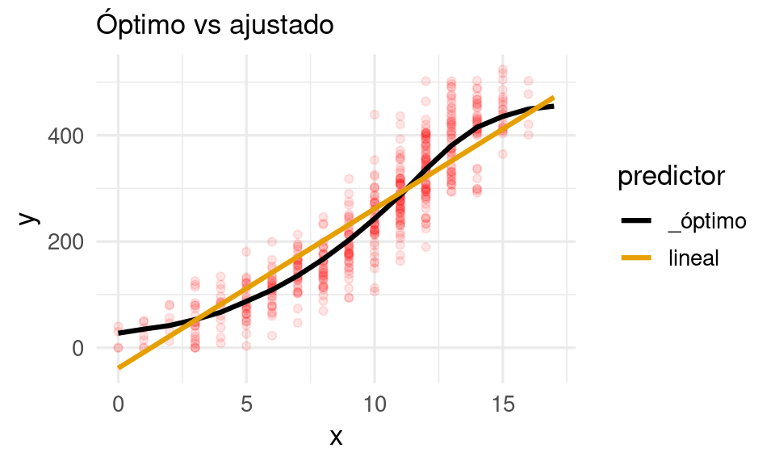
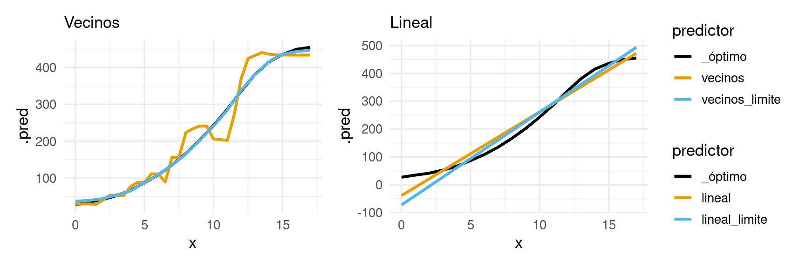

library(tidyverse)
library(tidymodels)
library(patchwork)
library(gt)
genera_datos <- function(n = 500, tipo = NULL){
dat_tbl <- tibble(nse = runif(n, 0, 100)) |>
mutate(estudio_años = floor(rnorm(n, 1.5 * sqrt(nse), 1))) |>
mutate(estudio_años = pmax(0, pmin(17, estudio_años))) |>
mutate(habilidad = rnorm(n, 100 + 0.1 * nse, 1)) |>
mutate(z = 100 + (habilidad/100) * ( 20 * nse + 5 * (estudio_años))) |>
mutate(ingreso = pmax(0, 0.2*(z + rnorm(n, 0, 150))))
obs_tbl <- dat_tbl |>
mutate(tipo = tipo, id = 1:n)
obs_tbl |> select(id, tipo, x = estudio_años, y = ingreso)
}2 Principios de aprendizaje supervisado
En esta sección examinaremos algunos principios teóricos y de metodología para el aprendizaje supervisado.
2.1 Población y pérdida
Supongamos que tenemos una población grande de observaciones potenciales de la forma
\[(x_1, x_2, \ldots, x_p, y) \]
Y para esa población nos interesa predecir una variable respuesta \(y\) numérica en términos de variables de entrada disponibles \(x = (x_1,x_2,\ldots, x_p)\):
\[(x_1, x_2, \ldots, x_p) \to y\]
El proceso que produce la salida \(y\) a partir de las entradas es típicamente muy complejo y dificíl de describir de forma mecanística (por ejemplo, el ingreso dadas características de los hogares).
Ejemplo
Para ilustrar esta discusión teórica, consideraremos datos simulados. La población está dada por el siguiente proceso generador de datos:
Tenemos una sola entrada y una respuesta numérica, y una muestra se ve como sigue:
set.seed(1234)
datos_tbl <- genera_datos(n = 500, tipo = "entrena")
ggplot(datos_tbl, aes(x = x, y = y)) + geom_jitter(width = 0.3) +
xlab("Años de estudio") + ylab("Ingreso anual (miles)")
Buscamos construir una función \(f\) tal que si observamos cualquier \(x = (x_1, x_2, \ldots, x_p) \to y\), entonces nuestra predicción es
\[\hat{y} = f(x_1, x_2, \ldots, x_p) = f(x).\] Con esta regla o algoritmo \(f\) queremos predecir con buena precisión el valor de \(y\). Esta \(f\), como explicamos antes, puede ser producida de muy distintas maneras (experiencia, reglas a mano, datos, etc.)
Nuestra primera tarea es definir qué quiere decir predecir con buena precisión.
Para hacer esto tenemos que introducir una medida del error, que llamamos en general función de pérdida.
Función de pérdida y error de predicción
Si el verdadero valor observado es \(y\) y nuestra predicción es \(f(x)\), denotamos la pérdida asociada a esta observación como \[L(y, f(x))\] Para medir el desempeño general de la regla \(f\), consideramos su valor esperado, el error de predicción, que es el promedio sobre toda la población:
\[Err(f) = E[L(y, f(x))]\]
Este es el error que obtendríamos promediando las pérdidas sobre toda la población de interés.
Observación: Para fijar ideas, podríamos usar por ejemplo la pérdida absoluta \(L(y, f(x)) = |y - f(x)|\) o la pérdida cuadrática \(L(y, f(x)) = (y - f(x))^2\).
Al menos en teoría, podemos encontrar una \(f\) que minimiza esta pérdida:
Predictor óptimo
Para una población dada, el predictor óptimo (teórico) es
\[f^* = \underset{f}{\mathrm{argmin}} E[L(y, f(x))].\]
Es decir: el mínimo error posible que podemos obtener es \(Err(f^*)\). Para cualquier otro predictor \(f\) tenemos que \(Err(f) \geq Err(f^*).\)
Por ejemplo si usamos la pérdida cuadrática \(L(y, f(x)) = (y - f(x))^2\), entonces puede mostrarse que
\[f^*(x) = E(y | x)\] de forma que \(f^*\) es la media condicional de la \(y\) dado que sabemos que las entradas son \(x\). Si usáramos la pérdida absoluta \(L(y, f(x)) = |y - f(x)|\) entonces \[f^*(x) = \textrm{mediana}(y|x).\] Distintas funciones de pérdida dan distintas soluciones teóricas. Por ejemplo, si existen valores atípicos en \(y\) producidos por errores de registro o medición, usar la pérdida absoluta puede dar mejores resultados que la cuadrática, que tiende a dar mayor peso a errores grandes.
Observaciones:
Podemos ver nuestra tarea entonces como una de ajuste de curvas: queremos aproximar tan bien como sea posible la función \(f^*(x)\).
No es simple decidir qué función de pérdida debería utilizarse para un problema dado de predicción.
Generalmente es una combinación de costos/beneficios del problema que tratamos, conveniencia computacional, y cómo se comportan los errores de nuestros predictores bajo distintas pérdidas. Sin embargo, al principio del proceso de construcción de modelos es mejor escoger una métrica simple que capture a grandes rasgos el comportamiento que esperamos (pérdida cuadrática, absoluta o logarítmica por ejemplo).Muchas veces es mejor considerar el problema de selección de la pérdida desde dos ángulos: el primero es computacional y de propiedades de la predicción, y el segundo tiene que ver con costos y beneficios asociados al problema que queremos resolver. Para el primero, alguna de las pérdidas estándar (como las que vimos arriba, cuadrática y absoluta, ologarítmica) son usualmente suficiente. En el segundo enfoque, el análisis es generalmente involucra más aspectos particulares del problema y generalmente tiene que hacerse de manera ad-hoc.
Ejemplo
Supongamos que nos interesa minimizar la pérdida cuadrática. Si tomamos una muestra muy grande (para este problema), podemos aproximar la predicción óptima directamente. Abajo graficamos nuestra muestra chica de datos junto con una buena aproximación del predictor óptimo:
poblacion_tbl <- genera_datos(n = 50000, tipo = "poblacion")
# calcular óptimo
preds_graf_tbl <- poblacion_tbl |>
group_by(x) |> # condicionar a x
summarise(.pred = mean(y)) |> # media en cada grupo
mutate(predictor = "_óptimo")
# graficar con una muestra grande
ggplot(datos_tbl, aes(x = x)) +
geom_jitter(aes(y = y), colour = "red") +
geom_line(data = preds_graf_tbl, aes(y = .pred, colour = predictor),
linewidth = 1.1) +
xlab("Años de estudio") + ylab("Ingreso anual (miles)")
2.2 Estimando el desempeño y datos de prueba
Para obtener una estimación de la pérdida para una función \(f\) que usamos para hacer predicciones, podemos tomar una muestra de datos del proceso generador:
\[{\mathcal T} = \{(\mathbf{x}^{(1)}, \mathbf{y}^{(1)}), (\mathbf{x}^{(2)}, \mathbf{y}^{(2)}), \ldots, (\mathbf{x}^{(m)}, \mathbf{y}^{(m)})\},\]
Compararíamos entonces las respuestas observadas \(\mathbf{y^{(i)}}\) con las predicciones \(f(\mathbf{x^{(i)}})\). Ahora resumimos evaluando el error promedio sobre los datos de prueba. El error de prueba de \(f\) es
\[ \widehat{Err}(f) = \frac{1}{m} \sum_{i=1}^m L(\mathbf{y}^{(i)} , f(\mathbf{x}^{(i)}))\] Por ejemplo, si usamos la pérdida cuadrática,
\[ \widehat{Err}(f) = \frac{1}{m} \sum_{i=1}^m (\mathbf{y}^{(i)} - f(\mathbf{x}^{(i)}))^2\] Si \(m\) es grande, entonces tenemos por la ley de los grandes números que \[Err(f) \approx \widehat{Err} (f)\] Podemos también estimar el error de estimación de \(\widehat{Err}(f)\) con técnicas estándar, por ejemplo bootstrap o aproximación normal.
Obervación: nótese que en estos cálculos no es necesario hacer ningún supuesto acerca de \(f\), que en este argumento está fija y no utiliza la muestra de prueba.
Ejemplo: óptimo
Supongamos que \(f\) es el predictor óptimo que obtuvimos arriba (pero esto aplica para cualquier otra función \(f\) que usemos para hacer predicciones). Tomamos una muestra de prueba, y evaluamos usando la raíz de la pérdida cuadrática media:
prueba_tbl <- genera_datos(n = 2000, tipo = "prueba")
eval_tbl <- prueba_tbl |>
left_join(preds_graf_tbl, by = "x")
resumen_tbl <- eval_tbl |>
group_by(predictor, tipo) |>
rmse(truth = y, estimate = .pred)
fmt_resumen <- function(resumen_tbl){
resumen_tbl |>
select(-.estimator) |>
pivot_wider(names_from = tipo, values_from = .estimate) |>
gt() |>
fmt_number(where(is_double), decimals = 0)
}
fmt_resumen(resumen_tbl)| predictor | .metric | prueba |
|---|---|---|
| _óptimo | rmse | 49 |
Este es nuestro error de prueba. Como la muestra de prueba no es muy grande, podríamos usar un método estándar para estimar su precisión, por ejemplo con bootstrap.
Ejemplo: regla
Ahora probemos con otro predictor, por ejemplo, supongamos que estamos usando la regla de “cada año de escolaridad aumenta ingresos potenciales en 20 unidades”, un predictor construido con reglas manuales que es
f_regla <- function(x){
20 * x
}Abajo lo graficamos en comparación con el modelo óptimo:
años_x <- tibble(x = seq(0, 17, by = 0.5))
preds_regla_tbl <- años_x |>
mutate(.pred = f_regla(x), predictor = "regla")
preds_graf_tbl <- bind_rows(preds_regla_tbl, preds_graf_tbl)
ggplot(datos_tbl, aes(x = x)) +
geom_point(aes(y = y), colour = "red", alpha = 0.2) +
geom_line(data = preds_graf_tbl, aes(y = .pred, colour = predictor), size = 1.1) Warning: Using `size` aesthetic for lines was deprecated in ggplot2 3.4.0.
ℹ Please use `linewidth` instead.
eval_tbl <- prueba_tbl |>
left_join(preds_graf_tbl, by = "x") Warning in left_join(prueba_tbl, preds_graf_tbl, by = "x"): Detected an unexpected many-to-many relationship between `x` and `y`.
ℹ Row 1 of `x` matches multiple rows in `y`.
ℹ Row 21 of `y` matches multiple rows in `x`.
ℹ If a many-to-many relationship is expected, set `relationship =
"many-to-many"` to silence this warning.resumen_tbl <- eval_tbl |>
group_by(predictor, tipo) |>
rmse(truth = y, estimate = .pred)
fmt_resumen(resumen_tbl)| predictor | .metric | prueba |
|---|---|---|
| _óptimo | rmse | 49 |
| regla | rmse | 91 |
Observa que el error es considerablemente mayor que el error que obtuvimos con el predictor óptimo del ejemplo anterior. Quisiéramos buscar algoritmos que tengan mejor desempeño aprendiendo de datos anteriores.
2.3 Aprendizaje supervisado
En aprendizaje supervisado, buscamos construir la función \(f\) de manera automática usando datos. Supongamos entonces que tenemos un conjunto de datos etiquetados (sabemos la \(y\) correspondiente a cada \(x\)):
\[{\mathcal L}=\{ (x^{(1)},y^{(1)}),(x^{(2)},y^{(2)}), \ldots, (x^{(N)}, y^{(N)}) \}\]
que llamamos conjunto de entrenamiento.
Un algoritmo de aprendizaje (aprender de los datos automáticamente) es una regla que asigna a cada conjunto de entrenamiento \({\mathcal L}\) una función \(\hat{f}\):
\[{\mathcal L} \to \hat{f} = f_{\mathcal L} \]
Una vez que construimos la función \(\hat{f}\), podemos hacer predicciones.
El desempeño del predictor particular \(\hat{f}\) se mide igual que antes: observamos otra muestra \({\mathcal T}\), que llamamos muestra de prueba,
\[{\mathcal T} = \{(\mathbf{x}^{(1)}, \mathbf{y}^{(1)}), (\mathbf{x}^{(2)}, \mathbf{y}^{(2)}), \ldots, (\mathbf{x}^{(m)}, \mathbf{y}^{(m)})\},\]
y calculamos el error de prueba. Si suponemos que \(m\) es suficientemente grande:
\[ \widehat{Err}(\hat{f}) = \frac{1}{m} \sum_{i=1}^m L(\mathbf{y}^{(i)} , \hat{f}(\mathbf{x}^{(i)})) \]
es una buena aproximación del error de predicción \(Err(\hat{f})\).
Adicionalmente, definimos otra cantidad de menor interés, el error de entrenamiento, como
\[\overline{err} = \frac{1}{N}\sum_{i=1}^N L(y^{(i)} , \hat{f}(x^{(i)})).\] que es una medida de qué tan bien se ajusta a \(\hat{f}\) a los datos con los que se entrenó \(\hat{f}\). Usualmente esta cantidad no es apropiada para medir el desempeño de un predictor, pues el algoritmo \(\hat{f}\) incluye las “respuestas” \(y_i\) en su construcción, de forma que tiende a ser una estimación optimista del error de predicción.
Ejemplo: vecinos más cercanos
Consideremos usar un método de \(k\)-vecinos más cercanos para resolver este problema. Este método es simple: si queremos hacer una predicción en las entradas \(x\), buscamos los puntos de entrenamiento con entradas \(x^{(i)}\) más cercanas a \(x\), que denotamos como \(N_k(x)\). Tomamos las \(y\) correspondientes a estas \(x\) y las usamos para hacer nuestra predicción:
\[f_2(x) = \frac{1}{k}\sum_{x^{(i)} \in N_k(x)} y^{(i)}\]
Primero obtendremos una muestra de entrenamiento:
set.seed(12)
entrena_tbl <- genera_datos(n = 20, tipo = "entrena")En nuestro ejemplo, en lugar de usar un número fijo de vecinos, utilizaremos 10% de los datos más cercanos al punto donde queremos predecir:
# modelo
modelo_kvecinos <- nearest_neighbor(
neighbors = nrow(entrena_tbl) * 0.1,
weight_func = "gaussian") |>
set_mode("regression") |>
set_engine("kknn")
# preprocesamiento
receta <- recipe(y ~ x, data = entrena_tbl |> select(x, y))
# flujo
flujo <- workflow() |>
add_recipe(receta) |>
add_model(modelo_kvecinos)
# Ajustamos flujo
flujo_ajustado_vecinos <- fit(flujo, entrena_tbl)Hacemos predicciones y calculamos el error:
eval_tbl <- bind_rows(prueba_tbl, entrena_tbl)
resumen_vmc_tbl <-
predict(flujo_ajustado_vecinos, eval_tbl) |>
mutate(predictor = "vecinos") |>
bind_cols(eval_tbl) |>
group_by(predictor, tipo) |>
rmse(truth = y, estimate = .pred)
fmt_resumen(resumen_vmc_tbl)| predictor | .metric | entrena | prueba |
|---|---|---|---|
| vecinos | rmse | 36 | 65 |
El error de prueba, que es el que nos interesa hacer chico, es considerablemente grande. Si graficamos podemos ver el problema:
preds_vmc <- predict(flujo_ajustado_vecinos, años_x) |>
bind_cols(años_x) |> mutate(predictor = "vecinos")
preds_graf_tbl <- bind_rows(preds_vmc, preds_graf_tbl |>
filter(predictor == "_óptimo"))
g_1 <- ggplot(entrena_tbl, aes(x = x)) +
geom_line(data = preds_graf_tbl |> filter(predictor != "regla"),
aes(y = .pred, colour = predictor), size = 1.1) +
geom_point(aes(y = y), colour = "red") +
labs(subtitle = "Óptimo vs ajustado")
g_1
Donde vemos que este método intenta interpolar los datos, capturando ruido y produciendo variaciones que lo alejan del modelo óptimo. Esto lo notamos en lo siguiente:
- Hay una brecha grande entre el error de entrenamiento y el error predictivo.
- Esta estimación de vecinos más cercanos es muy dependiente de la muestra de entrenamiento que obtengamos, pues intenta casi interpolar los datos. Esto sugiere alta variabilidad de las predicciones dependiendo de la muestra particular de entrenamiento que utilizamos.
- Decimos que este predictor está sobreajustado.
Ejemplo: regresión lineal
Ahora intentaremos con un modelo lineal. En este caso, utilizamos un predictor de la forma
\[f(x) = \beta_0 + \beta_1x\] Usamos la muestra de entrenamiento para encontrar la \(\beta_0\) y \(\beta_1\) que minimizar el error sobre los datos disponibles de entrenamiento, lo cual es un problema de optimización relativamente fácil. Usamos entonces \[\hat{f}(x) =\hat{\beta}_0 + \hat{\beta}_1 x\] para hacer nuestras predicciones.
modelo_lineal <- linear_reg() |>
set_mode("regression") |>
set_engine("lm")
flujo_lineal <- workflow() |>
add_recipe(receta) |>
add_model(modelo_lineal)
# Ajustamos
flujo_ajustado_lineal <- fit(flujo_lineal, entrena_tbl)Hacemos predicciones y calculamos el error:
eval_tbl <- bind_rows(prueba_tbl, entrena_tbl)
resumen_lineal_tbl <-
predict(flujo_ajustado_lineal, eval_tbl) |>
mutate(predictor = "lineal") |>
bind_cols(eval_tbl) |>
group_by(predictor, tipo) |>
rmse(truth = y, estimate = .pred)
fmt_resumen(bind_rows(resumen_vmc_tbl, resumen_lineal_tbl))| predictor | .metric | entrena | prueba |
|---|---|---|---|
| vecinos | rmse | 36 | 65 |
| lineal | rmse | 49 | 56 |
Y el desempeño de este método es mejor que vecinos más cercanos (ver columna de prueba).
preds_1 <- predict(flujo_ajustado_lineal, tibble(x = 0:17)) |>
bind_cols(tibble(x = 0:17, predictor = "lineal"))
preds_graf_tbl <- bind_rows(preds_1, preds_graf_tbl)
g_1 <- ggplot(datos_tbl, aes(x = x)) +
geom_point(aes(y = y), colour = "red", alpha = 0.1) +
geom_line(data = preds_graf_tbl |> filter(predictor %in% c("_óptimo", "lineal")),
aes(y = .pred, colour = predictor), size = 1.1) +
labs(subtitle = "Óptimo vs ajustado")
g_1
En este caso:
- No hay brecha tan grande entre el error de entrenamiento y el error predictivo
- Observamos patrones claros de desajuste: el predictor lineal no captura el patrón curvo que presentan los datos: en la parte media de las \(x\) tiende a producir predicciones demasiado altas y lo contario ocurre en los extremos
- Decimos que esté modelo presenta subajuste.
2.4 Entendiendo el error de predicción
Estos dos ejemplos de predictores tienen mal desempeño (comparado con el óptimo por distintas razones. Para entender qué pasa, consideramos los residuales de cada ajuste, para un caso de prueba:
\[\mathbf{y} - \hat{f_{\mathcal{L}}}(\mathbf{x})\] Esta cantidad puede tener un valor positivo o negativo grande, lo que indica errores grandes. Sea \(f^*\) el predictor óptimo que explicamos arriba. Entonces, en primer lugar:
\[\mathbf{y} - \hat{f_{\mathcal{L}}}(\mathbf{x}) = \underbrace{(f^* (\mathbf{x}) - \hat{f_{\mathcal{L}}}(\mathbf{x}))}_\text{reducible} + \underbrace{(\mathbf{y}- f^*(\mathbf{x}))}_\text{irreducible}.\] donde vemos que si las dos cantidades de la derecha están cercanas a cero, entonces el residual es cercano a cero (la predicción es precisa):
- Error irreducible: no depende de nuestro algoritmo, sino de la información que tenemos en \(x\) para predecir \(y\). Si queremos hacer esté error más chico, necesitamos incluir otras variables \(x\) relevantes para predecir \(y\).
- Error reducible: qué tan lejos nuestro método está del óptimo. Podemos mejorar este error seleccionando nuestra muestra de entrenamiento y método de predicción \(\hat{f}\) de manera adecuada.
En nuestros dos ejemplos anteriores, el error reducible era considerablemente grande (como podemos verificar comparando con el predictor óptimo, que sólo sufre de error irreducible). Pero la razón por la que ese error reducible es grande es diferente en cada caso.
Para explicar la diferencia, podemos considerar \(f_{lim},\) el predictor que obtendríamos con nuestro método si ajustáramos nuestro método con la población completa, de manera que \(\hat{f_{\mathcal{L}}}\to f_{\lim}\) cuando el tamaño de la muestra de entrenamiento \({\mathcal{L}}\) se hace muy grande.
Podemos refinar nuestra descomposición y escribir:
\[\mathbf{y} - \hat{f_{\mathcal{L}}}(\mathbf{x}) = \underbrace{f^* (\mathbf{x}) - f_{\lim}(\mathbf{x})}_\text{sesgo-especificacion} + \underbrace{f_{\lim}(\mathbf{x}) - \hat{f_{\mathcal{L}}}(\mathbf{x})}_\text{error-estimacion} + \underbrace{y - f^*(\mathbf{x})}_\text{irreducible}.\]
El error reducible ahora se descompone en dos partes:
- El sesgo de especificacion: que se debe a la incapacidad de nuestro modelo de capturar la forma del predictor óptimo, incluso conociendo toda la población. Este término no depende de la muestra de entrenamiento: depende de la capacidad de nuestro método para aprender en condiciones ideales.
- El error de estimación: este error resulta de que tenemos información limitada de la población, y nuestro ajuste se aleja de lo que obtendríamos con información completa. Esta parte del error varía dependiendo de la muestra particular de entrenamiento que utilizamos.
En nuestros dos ejemplos, intuímos que vecinos más cercanos sufre más de error de estimación y regresión lineal de sesgo de especificación, lo cual verificamos más adelante.
Podemos refinar aún más nuestra descomposición considerando qué pasa con distintas muestras del mismo tamaño para entender mejor el error de estimación. Si consideramos el valor esperado de nuestra predicción a lo largo de las posibles muestras \(\mathcal L\) que podemos extraer, descomponemos el segundo término como:
\[\hat{f_{\mathcal{L}}}(\mathbf{x}) - f_{\lim}(\mathbf{x}) = \hat{f_{\mathcal{L}}}(\mathbf{x}) - E(\hat{f_{\mathcal{L}}}(\mathbf{x})) + E(\hat{f_{\mathcal{L}}}(\mathbf{x})) - f_{\lim}(\mathbf{x}) \] donde el valor esperado es sobre todas las muestras de entrenamiento de un tamaño fijo \(n\) que podríamos obtener. El primer término puede llamarse variabilidad, mientras que el segundo es el sesgo que obtenemos al usar una muestra \(n\) finita (para algunos métodos, el segundo término puede ser igual a cero). Desde este punto de vista, podemos hacer también la descomposición:
\[\mathbf{y} - \hat{f_{\mathcal{L}}}(\mathbf{x}) = \underbrace{f^* (\mathbf{x}) - f_{lim}(\mathbf{x})}_\text{sesgo-especificacion} + \underbrace{f_{lim}(\mathbf{x}) - E(\hat{f_{\mathcal{L}}}(\mathbf{x}))}_\text{sesgo-estimacion} + \underbrace{E(\hat{f_{\mathcal{L}}}(\mathbf{x})) - \hat{f_{\mathcal{L}}}(\mathbf{x})}_\text{variabilidad} + \underbrace{ \mathbf{y} - f^*(\mathbf{x})}_\text{irreducible}.\]
Tenemos entonces cuatro términos:
- El sesgo de especificación mide la capacidad del modelo de utilizar datos de muestras cada vez más grandes. No depende de una muestra particular ni su tamaño.
- El sesgo de estimación mide en promedio qué tan lejos está la estimación del ideal con datos completos, y depende de la naturaleza de la muestra de entrenamiento, incluyendo su tamaño.
- La variabilidad es el único término que depende de la muestra particular que usamos. También depende del tamaño de muestra que utilizamos.
Los dos primeros términos usualmente se agrupan en un sólo término de sesgo, y obtenemos la siguiente definición usual:
Descomposición sesgo-varianza
El error total (la diferencia entre observado y nuestra predicción) se descompone como:
\[\mathbf{y} - \hat{f_{\mathcal{L}}}(\mathbf{x}) = \underbrace{f^* (\mathbf{x}) - E(\hat{f_{\mathcal{L}}}(\mathbf{x}))}_\text{sesgo} + \underbrace{E(\hat{f_{\mathcal{L}}}(\mathbf{x})) - \hat{f_{\mathcal{L}}}(\mathbf{x})}_\text{variabilidad} + \underbrace{y - f^*(\mathbf{x})}_\text{irreducible}.\]
Que explica qué sucede con distintas posibles muestras de entrenamiento de tamaño fijo. El sesgo en este caso significa en promedio qué tan lejos nuestro predictor está del óptimo, y la variabilidad qué tanto puede variar nuestra predicción con respecto al promedio.
2.5 Ejemplo: fuentes de error
Vamos a ver qué sucede con nuestros dos métodos si utilizamos una muestra grande:
muestra_grande_tbl <- sample_n(poblacion_tbl, 10000) |>
mutate(tipo = "entrena")
modelo_kvecinos <- nearest_neighbor(
neighbors = nrow(muestra_grande_tbl) * 0.10,
weight_func = "gaussian") |>
set_mode("regression") |>
set_engine("kknn")
# Ajustamos (no es necesario usar la población completa para este ejemplo)
flujo_vecinos <- workflow() |>
add_recipe(receta) |>
add_model(modelo_kvecinos)
flujo_ajustado_vecinos_limite <- fit(flujo_vecinos, muestra_grande_tbl)
flujo_ajustado_lineal_limite <- fit(flujo_lineal, muestra_grande_tbl)
eval_tbl <- bind_rows(prueba_tbl, muestra_grande_tbl)
resumen_vecinos_lim_tbl <-
predict(flujo_ajustado_vecinos_limite, eval_tbl) |>
mutate(predictor = "vecinos_limite") |>
bind_cols(eval_tbl) |>
group_by(predictor, tipo) |>
rmse(truth = y, estimate = .pred)
resumen_lineal_lim_tbl <-
predict(flujo_ajustado_lineal_limite, eval_tbl) |>
mutate(predictor = "lineal_limite") |>
bind_cols(eval_tbl) |>
group_by(predictor, tipo) |>
rmse(truth = y, estimate = .pred)
fmt_resumen(bind_rows(resumen_vmc_tbl,
resumen_lineal_tbl,
resumen_vecinos_lim_tbl,
resumen_lineal_lim_tbl) |> arrange(predictor))| predictor | .metric | entrena | prueba |
|---|---|---|---|
| lineal | rmse | 49 | 56 |
| lineal_limite | rmse | 54 | 54 |
| vecinos | rmse | 36 | 65 |
| vecinos_limite | rmse | 49 | 49 |
¿Qué patrones ves en esta tabla? Podemos también graficar para entender mejor qué está pasando:
preds_1 <- predict(flujo_ajustado_vecinos_limite, tibble(x = 0:17)) |>
bind_cols(tibble(x = 0:17, predictor = "vecinos_limite"))
preds_2 <- predict(flujo_ajustado_lineal_limite, tibble(x = 0:17)) |>
bind_cols(tibble(x = 0:17, predictor = "lineal_limite"))
preds_graf_tbl <- bind_rows(preds_1, preds_2, preds_graf_tbl) |>
mutate(predictor = factor(predictor))
g_1 <- ggplot(datos_tbl, aes(x = x)) +
geom_line(data = preds_graf_tbl |>
filter(str_detect(predictor, "vecinos|_óptimo")),
aes(y = .pred, colour = predictor), size = 1.1) +
labs(subtitle = "Vecinos")
g_2 <- ggplot(datos_tbl, aes(x = x)) +
geom_line(data = preds_graf_tbl |>
filter(str_detect(predictor, "lineal|_óptimo")),
aes(y = .pred, colour = predictor), size = 1.1) +
labs(subtitle = "Lineal")
g_1 + g_2 + plot_layout(guides = 'collect')
Esto patrón sugiere que:
Nuestro método de vecinos más cercanos tiene errores bajos por sesgo, pero tiene error considerable por sobreajuste o variabilidad.
Nuestro método lineal no tiene mucha variabilidad (el estimado con una muestra grande es casi igual al de la muestra de entrenamiento), sino más bien por sesgo.
El error por sesgo se reduce usando métodos más flexibles o menos restringidos que puedan capturar patrones claros en los datos.
Para reducir la variabilidad podemos usar métodos más simples o restringidos que no capturen tanto ruido.
El balance de complejidad correcto depende del tamaño de muestra de entrenamiento.
El error irreducible se puede reducir incorporando información adicional relevante a las entradas.
Complejidad y error de predicción
Para un tamaño de muestra de entrenamiento fijo,
- Métodos de predicción más flexibles o complejos tienden a sufrir más de error por variabilidad, pues dependen fuertemente de la muestra utilizada.
- Métodos de predicción más rígidos o simples tienden a sufrir más error por sesgo, pues dependen menos de la muestra utilizada.
2.6 Agregando más información y error irreducible
Podemos ver qué sucede cuando tenemos disponibles más variables relevantes. En este caso, probaremos con dos entradas:
genera_datos_2 <- function(n = 500, tipo = NULL){
dat_tbl <- tibble(nse = runif(n, 0, 100)) |>
mutate(estudio_años = floor(rnorm(n, 1.5 * sqrt(nse), 1))) |>
mutate(estudio_años = pmax(0, pmin(17, estudio_años))) |>
mutate(habilidad = rnorm(n, 100 + 0.1 * nse, 1)) |>
mutate(z = 100 + (habilidad/100) * ( 20 * nse + 5 * (estudio_años))) |>
mutate(ingreso = pmax(0, 0.2*(z + rnorm(n, 0, 150))))
obs_tbl <- dat_tbl |>
mutate(tipo = tipo, id = 1:n)
obs_tbl |> select(id, tipo, x_1 = estudio_años, x_2 = nse, y = ingreso)
}entrena_tbl <- genera_datos_2(20, tipo = "entrena")
prueba_tbl <- genera_datos_2(500, tipo = "prueba")
receta_2 <- recipe(y ~ x_1 + x_2, data = entrena_tbl)
flujo_lineal <- workflow() |>
add_recipe(receta_2) |>
add_model(modelo_lineal)
# Ajustamos
flujo_ajustado_lineal <- fit(flujo_lineal, entrena_tbl)
predict(flujo_ajustado_lineal, bind_rows(entrena_tbl, prueba_tbl)) |>
bind_cols(bind_rows(entrena_tbl, prueba_tbl)) |>
group_by(tipo) |>
rmse(truth = y, estimate = .pred) |> gt() |>
fmt_number(.estimate, decimals = 1)| tipo | .metric | .estimator | .estimate |
|---|---|---|---|
| entrena | rmse | standard | 27.1 |
| prueba | rmse | standard | 31.5 |
Y vemos cómo inmediatamente redujimos el error de predicción: en este caso, aunque la variabilidad aumentó un poco (tenemos más parámetros que estimar vs el modelo con una sola variable), la reducción en el sesgo y en el error irreducible es tan grande que el desempeño es muy superior. Examina el caso de vecinos más cercanos.
2.7 Acerca de la estimación del error de predicción
Cuando usamos una muestra de prueba limitada, podemos evaluar la precisión de nuestra estimación del error de predicción usando por ejemplo el bootstrap. En nuestro ejemplo anterior podríamos hacer los siguiente:
library(infer)
preds <- predict(flujo_ajustado_lineal, bind_rows(prueba_tbl)) |>
bind_cols(prueba_tbl)
preds |>
generate(reps = 1000, type = "bootstrap", variables = id) |>
group_by(replicate, tipo) |>
rmse(truth = y, estimate = .pred) |>
select(replicate, tipo, stat = .estimate) |>
get_ci(level = 0.90) |>
gt() |> fmt_number(where(is_double), decimals = 1)Warning: The `variables` argument is only relevant for the "permute" generation
type and will be ignored.| lower_ci | upper_ci |
|---|---|
| 29.9 | 33.0 |
2.8 Resumen
Tarea fundamental del análisis supervisado
- Usando datos de entrenamiento \({\mathcal L}\), construimos una funcion \(\hat{f}\) para predecir. Estas funciones se ajustan usualmente intentando estimar directamente el predictor óptimo \(f^*(x)\) (si lo conocemos teóricamente), o indirectamente intentando minimizar la pérdida sobre el conjunto de entrenamiento.
- Si observamos nuevos valores \(\mathbf{x}\), nuestra predicción es \(\hat{y} = \hat{f}(\mathbf{x})\).
- Buscamos que cuando observemos nuevos casos para predecir, nuestro error de predicción sea bajo en promedio (\(Err\) sea bajo).
- Usualmente estimamos \(Err\) mediante una muestra de prueba o validación \({\mathcal T}\).
- Nos interesan métodos de construir \(\hat{f}\) que produzcan errores de predicción bajos.
- Nótese que el error de entrenamiento se calcula sobre la muestra \({\mathcal L}\) que se usó para construir \(\hat{f}\), mientras que el error de predicción se estima usando una muestra independiente \({\mathcal T}\).
- \(\hat{Err}\) es una estimación razonable de el error de predicción \(Err\) (por ejemplo, \(\hat{Err} \to Err\) cuando el tamaño de la muestra de prueba crece), pero \(\overline{err}\) típicamente es una estimación mala del error de predicción.
- Nótese también que aunque generalmente podemos ajustar reduciendo el error de entrenamiento, lo que queremos es reducir el error de prueba: es decir, el error fuera de la muestra de entrenamiento.
Reduciendo el error de predicción
Para reducir el error de predicción, podemos:
- Incluir variables relevantes que reduzcan el error irreducible
- Reducir variabilidad usando métodos más estables o menos complejos
- Reducir sesgo usando métodos más flexibles
- Usar métodos con la estructura adecuada para el problema
Generalmente 2 y 3 están en contraposición, a lo que muchas veces se le llama equilibrio de varianza y sesgo. Los puntos 1 y 4 generalmente mejoran los resultados reduciendo tanto sesgo como variabilidad.
2.9 Resolver problemas con aprendizaje automático
En este curso nos concentraremos en la construcción, evaluación y mejora de modelos predictivos. Para que estas ideas funcionen en problemas reales, hay más aspectos a considerar que no discutiremos con tanto detalle, pues en general están muy ligados al problema particular de predicción que nos interesa (y muchas veces son considerablemente más difíciles de la teoría y los algoritmos):
Para entender exactamente cuál es el problema que queremos resolver se requiere trabajo analítico considerable, y también trabajo en entender aspectos del área o negocio donde nos interesa usar aprendizaje máquina. Muchas veces es fácil resolver un problema muy preciso, que tenemos a la mano, pero que más adelante nos damos cuenta de que no es útil.
Estos dos puntos incluyen indentificar las métricas que queremos monitorear y mejorar, lo cual no siempre es claro. Optimizar métricas incorrectas es poco útil en el mejor de los casos, y en los peores pueden causar daños. Evitar esto requiere monitoreo constante de varios aspectos del funcionamiento de nuestros modelos y sus consecuencias.
¿Cómo poner en producción modelos y mantenerlos? Un flujo apropiado de trabajo, que comienza con pipelines de preproceso y heurísticas simples, para después utilizar modelos de aprendizaje automático, seguido de monitoreo y entrenamiento continuo son cruciales para tener éxito con este enfoque.